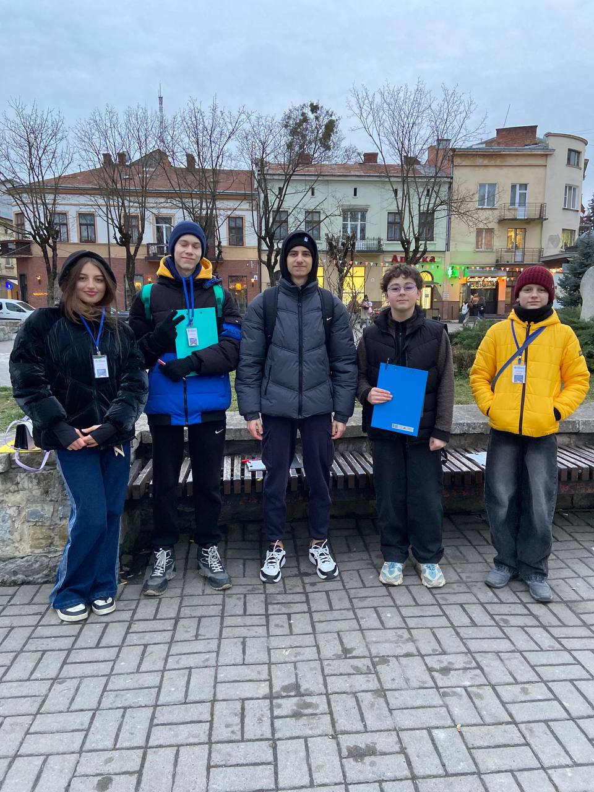

Висновок
Висновок: Людям подобається дивитися страшилки,романтичні фільми також вони рідко дивлються фільми. Фільм зачіпляє глубокі темі, такі як життя,майбутьне,пригоди. В людей є свій любимий персонажі,герої. В кожної людини є свій смак фільмів,жанри. Також кожна людина цінує щось у фільмах наприклад Драми, сюжети.